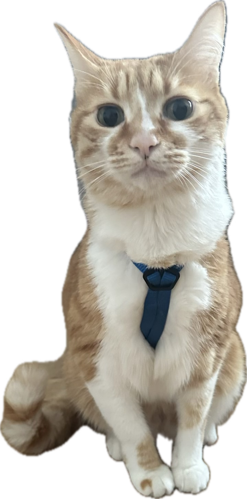

September Troublesome

Objective
To continue spreading purrs, cuddles,
and joy to my forever family while exploring new cozy spots for napping around the world.
I aim to excel in being the cutest and most lovable companion in any environment,
from university campuses to the heart of Europe,
all while maintaining the delicate family hierarchy and keeping my humans on their toes.
Education
- Degree: Fudan University Campus (Shanghai, China), Master of Cuddles and Mischief
- Specialization: Street Smarts and Human Charm
- Years Attended: 1 Month Old - 3 Months Old
- Achievements: Successfully adopted by a kind professor and later by my forever mom.
Work Experience
- Family Operations Coordinator (Vienna, Austria, 2023.9-Now)
- Role: Mommy's Snuggle Specialist & Daddy's Personal Alarm Clock
- Ensuring Mommy stays warm by sleeping by her side every winter night.
- Executing strategic wake-up calls for Daddy at dawn to secure breakfast.
- Maintaining family hierarchy, with Mommy as the leader, myself as the second-in-command, and Daddy in his rightful place.
- International Travel Companion, European Explorer (UK, France, Germany, Austria, 2023.7-2023.9)
- Providing emotional support during flights and train rides.
- Sampling and approving various European sunspots for relaxation.
- Supervising unpacking of suitcases to ensure no toy was left behind.
- House Guardian, Nanjing Residence (Nanjing, China,2022.9-2023.7)
- Inspecting all furniture for claw durability.
- Ensuring all windowsills were properly warmed by lounging.
- Regularly patrolling the premises for potential intruders (insects).
- Campus Kitten, Fudan University Campus (Shanghai, China, 2020)
- Engaging in playful activities with students and staff.
- Exploring every nook and cranny of the campus for optimal napping spots.
- Practicing vocal skills to alert humans to my presence.
Skills
- Napping Expertise: Can fall asleep in any sunny spot within minutes.
- Multilingual Purring: Fluent in Mandarin, English, German, and the universal language of love.
- Mouse Hunting: Trained in Fudan at early career stage, didn't master.
- Cuddle Mastery: Specializes in making humans feel loved and appreciated.
- Curiosity Management: Skilled at exploring new environments while maintaining a calm demeanor.
- Zoomie Specialist: Proficient in late-night high-speed dashes around the house, keeping the energy levels up.
Achievements
- Survival Expert: Overcame early life challenges as a homeless kitten to become a well-traveled, sophisticated feline.
- Travel Pro: Successfully traveled across multiple countries, including the UK, France, Germany, and Austria.
- Cultural Connoisseur: Adapted seamlessly to various cultural environments, from the bustling streets of Shanghai to the serene landscapes of Austria.
- Dietary Preferences: Developed a refined palate for egg yolk, beef, and chicken, with a special fondness for all three.
- Family Dynamics: Successfully established and maintained a clear family hierarchy, with Mommy at the top, followed closely by myself, and Daddy in third place.
About me
Contact me